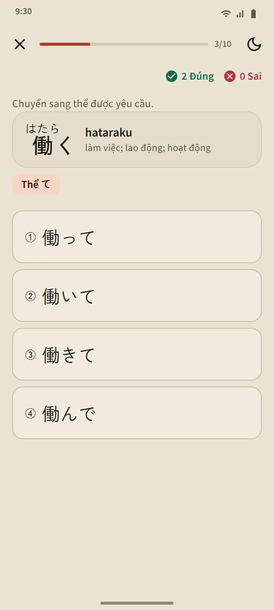
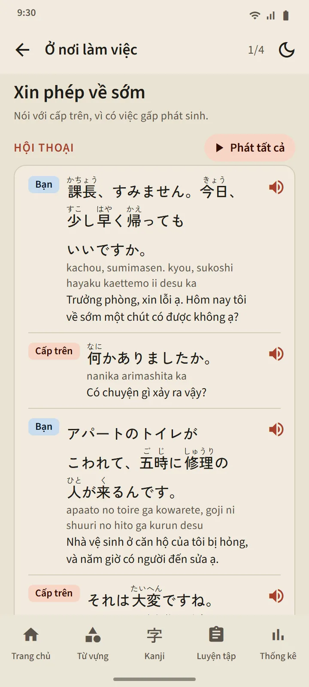

Năm cấp độ, 268 bài
Trang Ngữ pháp được mở từ mục "Tiếng Nhật cơ bản" trên trang chủ. Các chip phía trên chuyển giữa N5, N4, N3, N2 và N1; các chương mở ra ngay tại chỗ, và mỗi bài được đánh dấu chưa mở, đã đọc hoặc đã đạt bài tập. N5 bao gồm mọi mẫu câu trong đề luyện thi N5, còn N3 đến N1 bao gồm các mẫu được hỏi trong đề luyện thi của các cấp độ đó.
| Cấp độ | Số bài | Truy cập |
|---|---|---|
| N5 | 122 | Miễn phí |
| N4 | 56 | Miễn phí |
| N3 | 25 | Premium |
| N2 | 26 | Premium |
| N1 | 39 | Premium |

Cấu trúc của một bài học
Mọi bài học theo cùng một bố cục: mẫu câu và ý nghĩa của nó, Cách cấu tạo (công thức, kèm từ ví dụ), Giải thích, Ví dụ có furigana để bạn nghe, và Đừng nhầm lẫn cho các mẫu câu giống nhau. Câu tiếng Nhật chỉ xuống dòng giữa các cụm từ để dễ đọc trên điện thoại nhỏ.

Bài tập kèm lời giải thích
Nút ở cuối bài học mở một bài tập gồm ba đến năm câu hỏi. Mỗi câu trả lời đều có lời giải thích; một bài được tính là đã qua khi sai tối đa một câu, và những bài chưa qua có thể làm lại. Kết quả được ghi lại trên trang Ngữ pháp và trong tab Thống kê.

Luyện chia thể và ôn mẫu câu
Mục Luyện tập trên trang Ngữ pháp có hai bài luyện. Luyện chia thể chia động từ N5 sang thể ます, て, ない, thể từ điển và た; mỗi thể mở khi bạn đạt bài học tương ứng, và mỗi câu trả lời đều giải thích quy tắc. Ôn mẫu câu đưa ra tối đa 10 câu hỏi từ các bài đã đạt, bài lâu chưa ôn nhất được ưu tiên. Trong luyện thi, câu hỏi ngữ pháp dẫn tới bài học của nó qua "Học mẫu câu này".

Mẫu câu & Hội thoại
48 đoạn hội thoại ngắn trong 12 tình huống: giới thiệu và chào hỏi, trò chuyện hằng ngày, nơi làm việc, cửa hàng, nhà hàng, nhà ga, bệnh viện và hiệu thuốc, điện thoại, cơ quan nhà nước, ngân hàng và bưu điện, nhà ở và hàng xóm, và tình huống khẩn cấp. Mỗi đoạn có các câu thoại kèm furigana, romaji và nghĩa, nút Phát tất cả đọc bằng giọng khác nhau cho mỗi người nói, các mẫu câu quan trọng và một bài tập ngắn. 3 tình huống đầu tiên miễn phí.

Bằng ngôn ngữ của bạn
Phần giải thích, nghĩa của ví dụ, các lựa chọn và lời giải có ở 14 ngôn ngữ: tiếng Anh, tiếng Indonesia, tiếng Việt, tiếng Myanmar, tiếng Nepal, tiếng Thái, tiếng Sinhala, tiếng Filipino, tiếng Hindi, tiếng Bengal, tiếng Mông Cổ, tiếng Khmer, tiếng Hàn và tiếng Trung phồn thể. Câu tiếng Nhật, công thức và đáp án giống nhau ở mọi ngôn ngữ. Các bài học được viết riêng cho TokuGo rồi được thẩm định; nguồn mở chỉ dùng để đối chiếu.